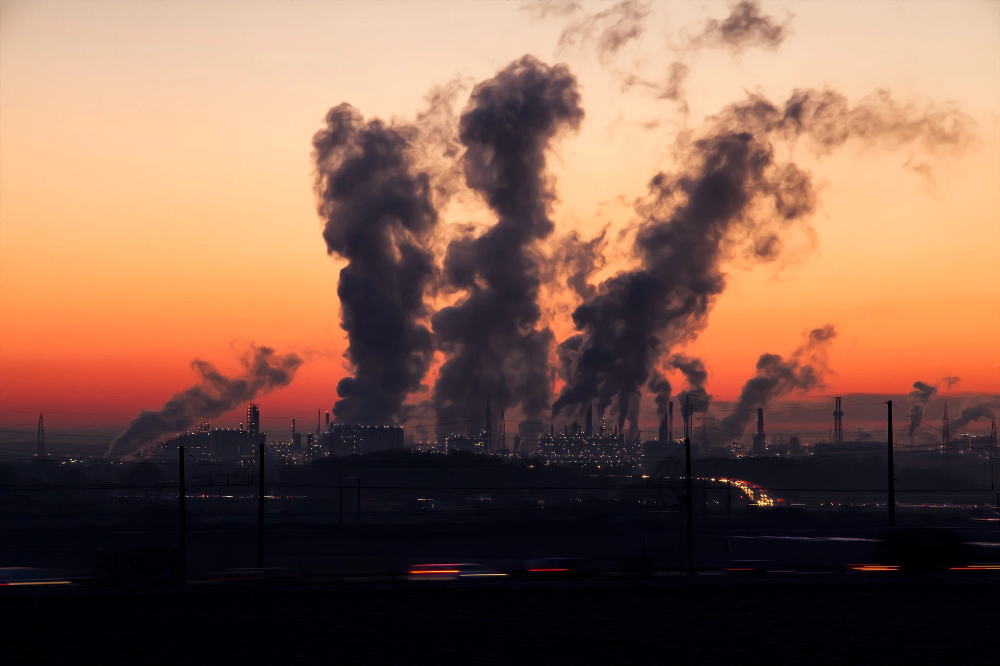

Os combustíveis fósseis são uma importante fonte de energia não renovável que interfere diretamente nas nossas vidas, ajudando na produção de combustível e matéria prima para todas as nações. Todavia, seu uso em excesso, e a sua queima podem acabar afetando negativamente o meio ambiente, e principalmente o ar que respiramos, impactando o nosso mundo.
Resumo deste artigo:
- O que são Combustíveis Fósseis?
- Tipos de Combustíveis Fósseis
- Impactos dos Combustíveis Fósseis na natureza
- Como diminuir a dependência dessas fontes de energia?
O que são Combustíveis Fósseis?
O termo “fóssil” é dado aos restos ou vestígios de plantas ou animais que se encontram nas camadas terrestres anteriores ao atual período geológico. Os combustíveis fósseis originaram-se exatamente por meio da decomposição lenta dos seres vivos animais e vegetais ao longo de milhares ou milhões de anos. Esses restos de matéria orgânica foram sendo soterrados nas camadas mais profundas da crosta terrestre, preservando o oxigênio, e ocorreu a sua decomposição por serem submetidos à ação de bactérias, pressão e calor.
Esses combustíveis geram grande potencial de produção de energia, pois possuem um teor calorífico alto. Devido a isso, muitos países travam conflitos pela posse de uma área que contenha grande reserva de algum deles. Como exemplo, podemos citar a Guerra do Golfo, que aconteceu no início dos anos 1990 entre Iraque e Kwait, países localizados no sudoeste do continente asiático.
Tipos de Combustíveis Fósseis
Basicamente os combustíveis fósseis são o petróleo, o carvão mineral e o gás natural, todos provenientes da decomposição de seres vivos.
Petróleo
É a principal fonte de energia usada pela humanidade desde o século XIX, a partir da Segunda Revolução Industrial. Esse combustível é formado com base na matéria orgânica depositada em áreas de bacias sedimentares. Com a ação do tempo, do calor das rochas e da pressão exercida sobre elas, tem-se o surgimento de uma substância que possui hidrocarbonetos (composto químico de hidrogênio e carbono) na forma líquida e gasosa. Sua importância está relacionada tanto com a produção de energia quanto com os seus derivados. Do petróleo, produzimos gasolina, óleo diesel, além de matéria-prima utilizada na confecção de polímeros. Estes, por sua vez, são utilizados na produção do plástico, material presente em quase tudo que usamos, desde copos até para-choques de carros, próteses humanas, entre outros.
Gás Natural
Pode ser encontrado em reservas petrolíferas, pois é formado da mesma maneira, além de estar localizado nos mesmos terrenos ou similares. É um combustível bastante utilizado na geração de energia, aquecimento de caldeiras das usinas termoelétricas, e pode ser utilizado para o aquecimento de casas nos países mais frios do globo, localizados nas médias e altas latitudes.
Em algumas localidades, o gás natural substitui a geração de energia de usinas hidrelétricas, pois esse combustível fóssil ocupa menos espaço e pode ser usado em qualquer região que tenha reserva de gás, mas não tenha uma reserva hídrica. Daí a substituição.
Carvão Mineral
Foi o principal combustível da Primeira Revolução Industrial. Possuem grandes quantidades de carbono, formadas pela decomposição de grandes florestas (organismos vegetais) com baixa quantidade de oxigênio. Quanto mais carbono, mais calor o carvão gerará.
O carvão mineral é bastante utilizado nas usinas termelétricas, nas siderúrgicas (para produzir aço), nas indústrias químicas, e em outros tipos que precisam de grandes quantidades de calor para produzir algum outro material. Pode ser encontrado em regiões da Ásia, Europa e América do Norte em grande abundância.
Impactos dos Combustíveis Fósseis na natureza
A queima de combustíveis fósseis pode causar graves danos ao meio ambiente e à saúde humana. Problemas respiratórios causados pela emissão de poluentes atmosféricos, como monóxido de carbono, além do dióxido de enxofre e óxidos de nitrogênio, contribuintes da chuva ácida, advém dessa fonte de energia. A combustão incompleta desses recursos libera monóxido de carbono, um gás extremamente prejudicial. Além de possuírem impurezas que são liberadas em suas queimas, poluindo a atmosfera. Os gases de sua combustão trazem inclusive problemas de saúde, como asma, bronquite, intoxicações por Monóxido de Carbono, irritações de pulmão, náuseas, dispneia e até doenças cardiovasculares.
Porém o principal problema que a queima dos combustíveis fósseis traz é a partir da liberação de gás carbono na atmosfera, que acarreta no aumento do Efeito estufa e nas mudanças climáticas. O Efeito estufa é a concentração de gases neutralizantes de raios solares presentes na atmosfera terrestre. Isso permite que parte do calor vindo do Sol possa se reter no nosso ar, fazendo com que a temperatura do nosso planeta esteja em equilíbrio, caso contrário passaríamos por muitas variações de temperatura. Os principais gases do efeito estufa são: Vapor de Água (H2O), Monóxido de Carbono (CO), Dióxido de Enxofre (SO2), o gás Metano (CH4) e o próprio gás Carbono (CO2).
Mas a questão é que o processo de queima de combustíveis fósseis libera muito gás carbono na atmosfera, que acaba retendo mais radiação solar, intensificando o Efeito estufa. Isso traz muitas consequências para o meio ambiente, e o principal deles é o aumento da temperatura média do planeta, conhecido como Aquecimento Global. O Aquecimento Global acarreta outros problemas, como no aumento dos níveis dos oceanos, derretimento das geleiras perda de habitat para muitas espécies.
Outro problema dos combustíveis fósseis é em relação à água. Quando há algum tipo de vazamento em seu transporte, que geralmente é feito em navios, os dejetos liberados do óleo impedem a entrada de luz no mar e a fotossíntese dos vegetais não pode ser realizada da forma correta. Isso ajuda até mesmo na intensificação do efeito estufa, uma vez que boa parte do gás carbono da atmosfera é absorvido por algas marinhas. O vazamento de petróleo também prejudica as comunidades litorâneas que utilizam a pesca como meio de sobrevivência. Isso porque a poluição das águas pode causar graves problemas de saúde para a população, enquanto a morte de peixes e crustáceos impedem os pescadores de exercerem suas atividades.
Como diminuir a dependência dessas fontes de energia?

A substituição dessa fonte de energia é uma das formas que temos de como poderíamos evitar a dependência dela. Entre os principais exemplos de tipos de energias alternativas, estão: a energia solar, eólica, hidráulica (também chamada de hídrica ou hidrelétrica), geotérmica e energia de ondas para obtenção de energia elétrica e, como substitutos de combustíveis fósseis, os biocombustíveis de origem vegetal. Para evitar o uso deste tipo de energia também podemos usar mais transportes públicos, andar mais de bicicleta, para diminuir a circulação de carros que por estarem sempre em trânsito, liberam diversos poluentes no ar.